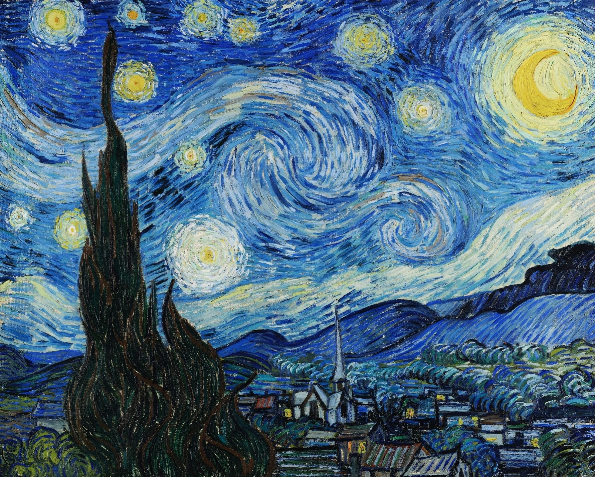

Wheatfield with Reaper, 1889
ในช่วงที่ Van Gogh รักษาตัวอยู่ที่โรงพยาบาลใน Saint-Remy อิสรภาพการเดินทางของเขาก็ได้ถูกจำกัดเหลือแค่ภายในพื้นที่โรงพยาบาล
การวาดต่างๆ จึงเกิดขึ้นจากความทรงจำ หรือไม่ก็เป็นการวาดภาพตามศิลปินชื่อดังท่านอื่นๆ
ซึ่งขัดกับสุทรียะการวาดภาพของเขาอย่างมากที่ไม่สามารถวาดภาพได้จากบรรยากาศจริง
มีเพียงไม่กี่ครั้งเท่านั้นที่ Van Gogh จะสามารถออกมาวาดรูปข้างนอกได้

Van Gogh มองข้าวสาลีเหมือนเป็นมนุษย์ และ Reaper
หรือคนเกี่ยวข้าวก็เหมือนคนที่กำลังจะมาเอาชีวิตเราไป (ดูจากภาพอาจนึกไม่ออก แต่ใน pop culture
จะเห็นมนุษย์หัวกะโหลกผ้าคลุมดำ ถือไม้เท้าเกี่ยวข้าว ซึ่งมักจะเกี่ยวข้องกับทูตแห่งความตาย
นั่นแหละความ Reaper อีกแบบนึง) ภาพนี้จึงพูดถึงความตาย
แต่มันเป็นความตายที่เขาพร้อมจะต้อนรับ หยอกล้อกับความตายที่เรามักจะคุ้นตากัน
Click on the picture